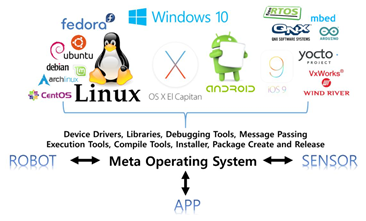
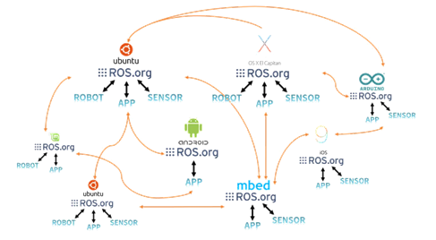
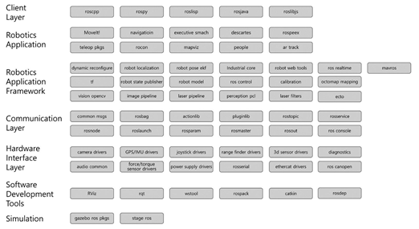
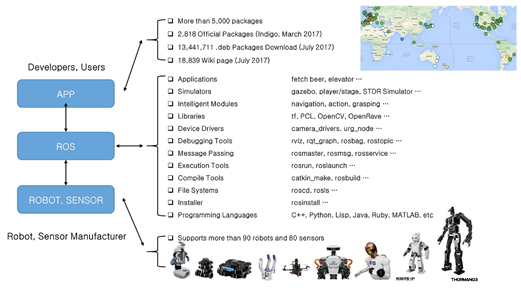

Giới thiệu về ROS¶
ROS là một hệ điều hành mã nguồn mở. Nó cung cấp các hoạt động mà bạn mong chờ từ một hệ điều hành, bao gồm trừu tượng phần cứng, điều khiển thiết bị cấp thấp, thực hiện các chức năng thông dụng, thông điệp truyền đi giữa các quá trình, và quản lý gói. Nó cũng cung cấp các công cụ và thư viện cho việc thu thập, xây dựng, viết và chạy mã trên nhiều máy tính.
HỆ ĐIỀU HÀNH META¶
 Hệ thống (OS) hoạt động cho các máy tính mục đích chung bao gồm Windows (XP, 7, 8, 10), Linux (Linux Mint, Ubuntu, Fedora, Gentoo) và Mac (OS X Mavericks, Yosemite, El Capitan). Đối với điện thoại thông minh, có Android, iOS, Symbian, RIMO, Tizen vv ROS là một hệ điều hành mới cho robot? ROS là tên viết tắt của Hệ điều hành Robot, vì vậy nó sẽ logic để nói rằng nó là một hệ điều hành. Đặc biệt, những người chưa quen với ROS có thể nghĩ rằng nó là một hệ điều hành tương tự như hệ điều hành nói trên. Tuy nhiên, một mô tả chính xác hơn đó là ROS là một hệ điều hành meta. ROS không phải là một hệ điều hành truyền thống như Windows, Linux và Android nhưng ROS phải chạy trên các hệ điều hành đó. Để hoạt động ROS Ubuntu phải được cài đặt đầu tiên. Sau khi hoàn thành cài đặt ROS trên Linux, các tính năng được cung cấp bởi các hệ điều hành truyền thống như hệ thống quản lý quy trình, hệ thống tập tin, giao diện người dùng và chương trình tiện ích (biên dịch, mô hình thread) có thể được sử dụng. Ngoài các tính năng cơ bản được cung cấp bởi Linux, ROS cung cấp chức năng thiết yếu cần thiết cho chương trình ứng dụng robot như các thư viện như truyền dữ liệu / nhận giữa các phần cứng không đồng nhất, lịch trình, và xử lý lỗi. Đây là loại phần mềm cũng được gọi là middleware hoặc khung phần mềm.
{kind=link}
{kind=link}
MỤC TIÊU CỦA ROS¶
Mục tiêu của ROS là “ xây dựng môi trường phát triển cho phép phát triển phần mềm robot với sự cộng tác trên một cấp độ toàn cầu.” ROS tập trung vào việc tối đa hóa việc tái sử dụng code trong việc nghiên cứu và phát triển robot, chứ không phải là định hướng về phía cái gọi là nền tảng phần mềm robot, middleware... Để hỗ trợ điều này, ROS có những đặc điểm sau đây.
Quá trình phân phối: Nó được lập trình theo hình thức các đơn vị tối thiểu của các quá trình thực thi (node). Mỗi quá trình chạy độc lập và trao đổi dữ liệu một cách hệ thống.
Quản lý gói: Nhiều quá trình có cùng một mục đích được quản lý như là một gói để dễ dàng sử dụng và phát triển, cũng như thuận tiện để chia sẻ, sửa đổi và phân phối lại.
Kho công cộng: Mỗi gói được công bố công khai đến kho công cộng ưa thích của nhà phát triển (ví dụ, GitHub) và quy định cụ thể giấy phép của họ.
API: Khi phát triển một chương trình sử dụng ROS, ROS được thiết kế để chỉ cần gọi một API và chèn nó một cách dễ dàng vào mã được sử dụng.
Trong source code giới thiệu trong mỗi chương, bạn sẽ thấy rằng chương trình ROS là không khác nhiều so với C ++ và Python.
Hỗ trợ ngôn ngữ lập trình khác nhau: như Python, C ++, và Lisp cũng như ngôn ngữ như JAVA, C # và Ruby. Nói cách khác, bạn có thể phát triển một chương trình ROS sử dụng một ngôn ngữ lập trình ưa thích của bạn.
CÁC THÀNH PHẦN CỦA ROS¶
Như đã trình bày trong Hình 2-3, ROS bao gồm một thư viện khách hàng để hỗ trợ nhiều ngôn ngữ lập trình, giao diện phần cứng để kiểm soát phần cứng, thông tin liên lạc để truyền dữ liệu và tiếp nhận, ứng dụng Khung Robotics để giúp tạo nhiều ứng dụng, các ứng dụng Robotics là một ứng dụng dịch vụ dựa trên ứng dụng Khung Robotics, công cụ mô phỏng có thể kiểm soát robot trong một không gian ảo, và công cụ phát triển phần mềm
{kind=link}
Các thành phần của ROS
HỆ SINH THÁI¶
Các nhà sản xuất điện thoại thông minh sẽ sản xuất các thiết bị có hỗ trợ giao diện phần cứng của hệ điều hành, Các công ty hệ điều hành tạo ra một thư viện chung để vận hành các thiết bị từ các nhà sản xuất khác nhau. Do đó, các nhà phát triển phần mềm có thể sử dụng một số thiết bị mà không hiểu phần cứng để phát triển ứng dụng. Hệ sinh thái bao gồm việc phân phối các ứng dụng cho người dùng cuối
{kind=link}